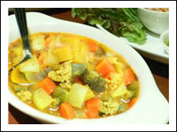
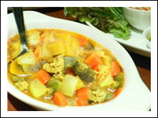
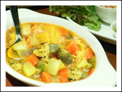

커리(Curry) 재료
카레 가루 100g
닭가슴살 200g
감자 1개
양파 1/2개
당근 1/2개
커리(Curry) 만드는 법
카레 가루 8큰술에 물 6큰술을 넣어 풀어놓는다.
닭가슴살, 감자, 양파, 당근 등을 따로 중불에 살짝 볶는다.
볶아 놓은 재료를 카레를 풀어놓은 물과 함께 냄비에 넣고 물 2컵을 부은 후 15분 정도 끓인다.
양파
떡잎식물 백합목 백합과의 두해살이풀
당근 쌍떡잎식물 산형화목 미나리과의 두해살이풀.
 
